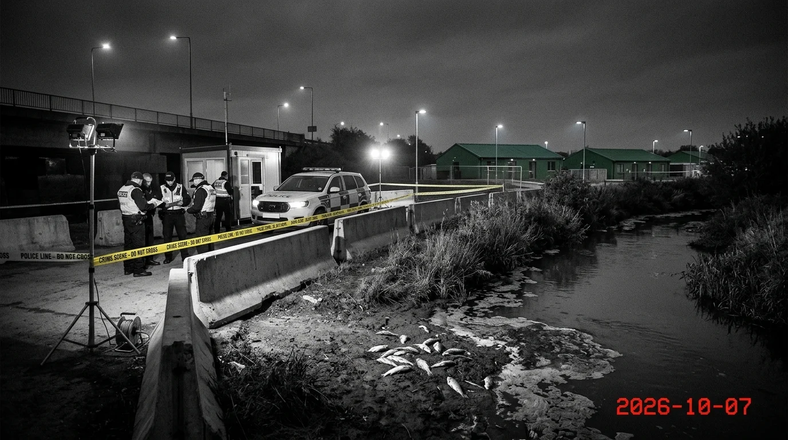

🌐
인터넷 뉴스
🔍
검색기
📁
수업 노트 정리
📁
비밀 수사자료
💬
EchoTalk
📹
V-Watcher
📋
수사 핀보드
📑
조사 보고서
📄
사건개요.txt
🗑️
휴지통
📝
메모장
💣
지뢰찾기
📌
[업무 인수인계] 4대 필수 단서 리스트
※ 감사원 고발을 위해 아래 4대 영역 단서를 반드시 수집하세요.
👕 의생활: 교복 섬유 혼용률 & 세탁 시 생기는 문제
🥗 식생활: 수입 농산물 항공 운송 & 잔반 처리
🏠 주생활: 규격 미달 단열재 & 심야 기계실
♻️ 자원순환: 주민 생활시간 착취 & 쓰레기 밀수출
- 1단계: 메신저(EchoTalk) 대화 실종된 한소미 학생 친구 '이지훈'과 대화하여 초기 단서 확보
- 2단계: [검색기] & V-Watcher 조사 바탕화면의 [검색기]와 복구 영상에서 교과 핵심 단서들을 추적
- 3단계: [수사 핀보드]에서 단서 확인 메신저 대화로 얻은 단서가 자동 등록됩니다
- 4단계: [조사 보고서] 작성 및 제출 보고서 빈칸을 채우고 [제출]하여 감사원에 고발
📍
수사 단서 실시간 수집 현황 (0/4)
의(衣):
미발견 - 교복 섬유 시험성적서 탐색
식(食):
미발견 - 급식 식자재 항공 운송 송장 탐색
주(住):
미발견 - 규격 미달 단열재/디젤 발전 탐색
순환:
미발견 - 폐기물 밀수출/그린워싱 탐색
※ 문서 열람 후 [수사 핀보드에 단서 고정] 시 자동 등록됩니다.
현재 목표
💬 메신저(EchoTalk)에서 이지훈 학생과 대화하여 단서를 확인하세요.
사건개요.txt - 메모장
[긴급 브리핑: 0번지 생태마을 봉쇄 사건]
어젯밤 통신이 전면 차단된 '누리 에코타운' 관제실에서 비밀리에 복구된 포렌식 이미지입니다.
📷 [포렌식 현장 사진 01] 생태하천 통제 구역 및 수질 검문소

▲ [2026-10-02 06:40 촬영] 누리 에코타운 경계 하천 및 수질 측정 검문소 현장. 백탁수 유출과 함께 하천 전역에서 물고기가 집단 폐사하여 방호선이 설치됨. (클릭하여 확대)
⚠️ 3대 미스터리 사건
- 사건 1: 하천에서 어류 수천 마리가 거품과 함께 떼죽음당함.
- 사건 2: 강화중학교 환경동아리 학생 [한소미]가 야간에 실종됨.
- 사건 3: 탄소배출 0g 시범도시 전체가 비상 봉쇄됨.
🔎 추천 초기 검색 키워드
검색창에 누리 에코타운, 한소미, 생태하천, 강화중학교, 폴리에스터, 푸드 마일리지를 입력해 보세요.
🔍 검색기 - 로컬 아카이브 (정밀 수사 모드)
🔎
최근/추천 키워드:
0건
DOC-000
문서 제목
일자: 2026-00-00
출처: 출처기관
⚠️
NO RESULTS FOUND
""에 대한 일치하는 기록이 발견되지 않았습니다.
💡 조사관 추천 키워드:
기술·가정 교과 용어 또는 사내 규격 명칭을 사용하십시오.
📹 V-Watcher - 복구 영상 및 CCTV 감식기
00:00 / 00:45
영상 타이틀
영상 요약 설명
복구된 영상 목록
타임라인 장면 안내 (5초 단위 전환)
💬 EchoTalk - 인트라넷 메신저
대화 상대 목록
🧑💻
이지훈 (동아리 부장)
온라인
👩🏫
박민서 (영양교사)
🔒 지훈과 대화 후 해금
👷
최기택 (설비소장)
🔒 영양교사 대화 후 해금
🎭
Deep-Eco (제보자)
🔒 설비소장 대화 후 해금
이지훈 (동아리 부장)
온라인
※ 상대방의 질문에 맞는 올바른 단서 답변을 입력해야 대화가 이어집니다.
상대방이 메시지를 입력하고 있습니다...
📋 수사 핀보드 (의·식·주·순환 단서 매트릭스)
메신저 대화를 진행하면 단서가 자동으로 등록되어 4대 기술·가정 영역별로 분류됩니다. 문서의 [📌 수사 핀보드에 단서 고정] 버튼으로 직접 고정할 수도 있습니다.
👕 의생활 (衣)
섬유/미세플라스틱
🥗 식생활 (食)
푸드 마일리지/메탄가스
🏠 주생활 (住)
패시브 하우스/단열/디젤
♻️ 자원순환 (循環)
생활시간/그린워싱
NIRIS
에코타운 환경 자원 감사 조사 보고서
의생활 (衣) 섬유 성분 및 방류 오염 검증
수질 정밀 검사 결과, 하천에 방류된 세탁 폐수 속 섬유는 100% 천연 오가닉 코튼이 아닌 공인 시험성적서에 기재된 석유계 합성섬유로 밝혀졌다. 마을 공용 세탁소 배수구에서 필터 없이 방류된
이(가) 어류의 아가미를 질식시켜 생태하천 집단 폐사를 촉발한 직접적 원인이다.
식생활 (食) 탄소발자국 및 폐기물 검증
100% 로컬푸드 자급 샐러드라는 홍보는 완전한 거짓이었으며, 칠레산 화물 항공 운송장을 통해 18,340km 원거리 항공 운송으로 발생한 막대한 푸드 마일리지가 적발되었다.
또한 감량기 고장 후 텃밭 지하 불법 매립관에 잔반을 투기하여 혐기성 분해에 의한 폭발성
누출 사고를 유발했다.
주생활 (住) 제로에너지 사기 검증
국토부 1등급 제로에너지건축물(ZEB) 인증과 달리, 시공사는 고성능 패시브 자재 대신 규격 미달 저가 스티로폼을 납품하여 혹한기 벽면
(이)와 곰팡이를 번식시켰다. 신재생에너지 부족을 은폐하기 위해 심야에 지하실
(을)를 돌려 디젤 연료를 불법 연소했다.
자원순환 (循環) 그린워싱 및 횡령 검증
주민들에게 일일 2~3시간씩 가혹한 분리배출 4원칙 노동을 강요하며 생활시간을 착취했으나, 실제로는 플라스틱 쓰레기 450톤을 인천항 컨테이너를 통해 해외로 불법 밀수출한 사기극이었다.
재단 이사장은 이를 위장하여 허위 탄소 배출권 수십억 원을 편취한 전형적인
사기 범죄를 저질렀다.
🗑️ 휴지통
※ 항목을 더블클릭하거나 선택 후 [복원]을 누르면 파일이 복원되어 내용을 확인할 수 있습니다.
| 이름 | 삭제 일시 | 크기 | 상태 |
|---|
🌐 에코환경 포털 뉴스 - Microsoft Internet Explorer
주소(D):
NuriPortal 뉴스
중학교 기술·가정 및 생태환경 종합 포털
| |
📁 수업 노트 정리 (한소미)
주소:
C:\Users\한소미\바탕 화면\수업 노트 정리
💡 한소미 학생이 기술·가정 수업 시간에 정리한 탐구 필기 파일들입니다. 항목을 더블클릭하여 내용을 확인하세요.
📁 비밀 수사자료
주소:
C:\Users\한소미\다운로드\비밀_수사자료
📁 소미가 외부 인증기관 및 현장에서 입수한 결정적 증빙 문서들입니다. 항목을 더블클릭하여 정밀 감식하세요.
메모장
파일(F) 편집(E) 서식(O) 도움말(H)
💣 지뢰찾기 (Minesweeper)
새 게임(N)
초급(B)
도움말(H)
010
000
📝 메모장 - 나의 수사 메모
파일(F) 편집(E) 서식(O) 도움말(H)
자동 저장 활성화됨